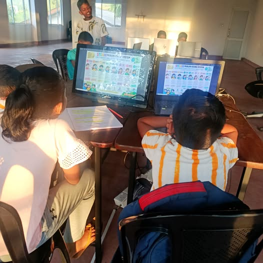

ACADEMIC FOUNDATIONS01 / ACADEMIC∑
Mathematics
Develop logical thinking, analytical skills and mathematical confidence through engaging lessons and practical problem-solving.
Enquire about Mathematics ↗LEARNING PATHWAYS AT DEPENDABITS
Build strong academic foundations, explore technology and develop practical skills. There is a pathway to keep learning, creating and growing.
YOUR LEARNING JOURNEY
From early secondary foundations to advanced study and skills development, explore learning opportunities at every stage.
EXPLORE OUR SUBJECTS
Choose a subject and tell us what you would like to achieve. We’ll help you find the right learning pathway.
Showing all 7 subjects across our learning levels.

ACADEMIC FOUNDATIONSDevelop logical thinking, analytical skills and mathematical confidence through engaging lessons and practical problem-solving.
Enquire about Mathematics ↗Build confidence in communication, reading, writing and language skills through interactive learning experiences.
Enquire about English ↗ DISCOVER & EXPERIMENT
DISCOVER & EXPERIMENTExplore the world through scientific thinking, experimentation and hands-on activities.
Enquire about Science ↗Develop essential digital literacy and information technology skills for a connected world.
Enquire about ICT ↗Explore computing principles, algorithms, computational thinking and problem-solving.
Enquire about Computer Science ↗Learn programming fundamentals through practical exercises, creative projects and problem-solving.
Enquire about Python ↗LEARN BY MAKINGSConnect Science, Technology, Engineering, Arts and Mathematics through hands-on projects and creative exploration.
Enquire about STEAM ↗Course content and learning pathways are matched to each student’s grade and goals. Contact us to discuss the most suitable option.
LET’S FIND YOUR PATHWAY
Tell us the grade, subject or skill you’re interested in. We’ll help you take the next step.